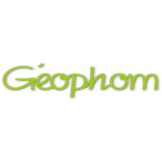
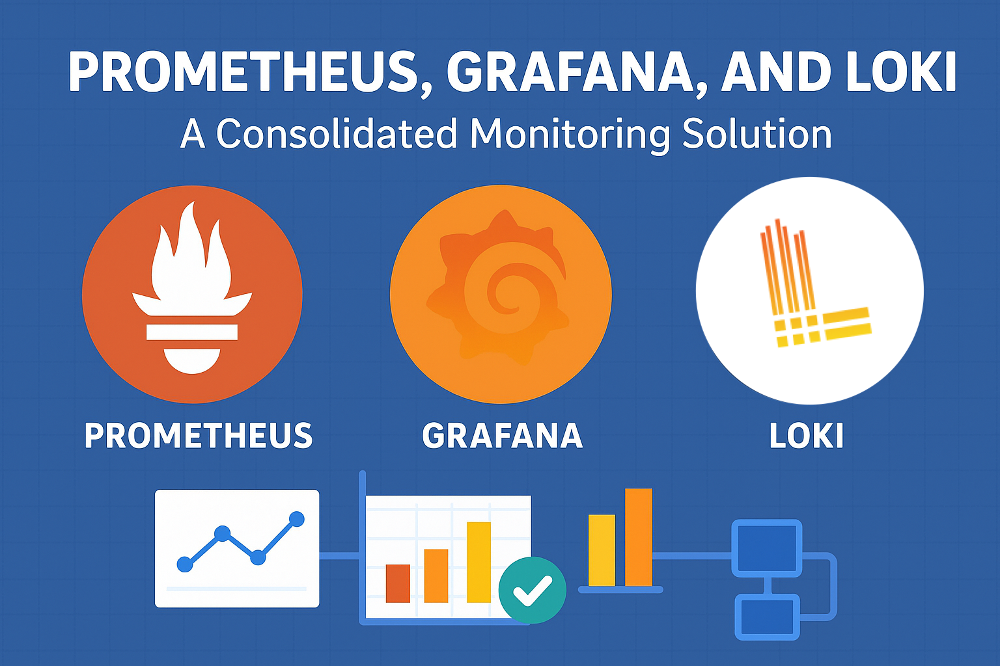
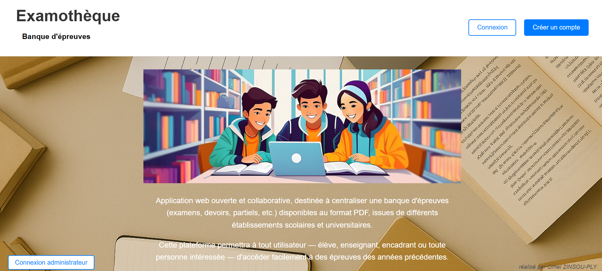
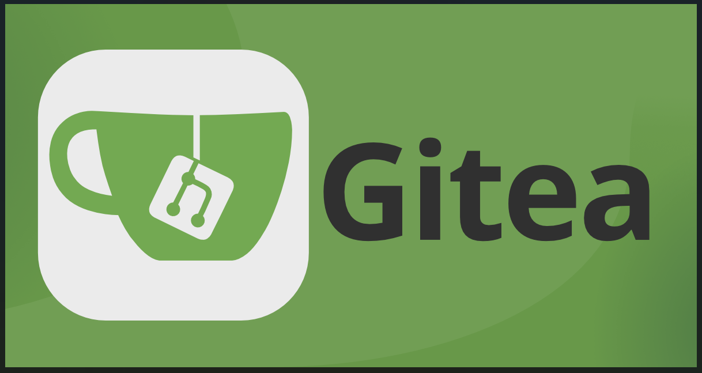
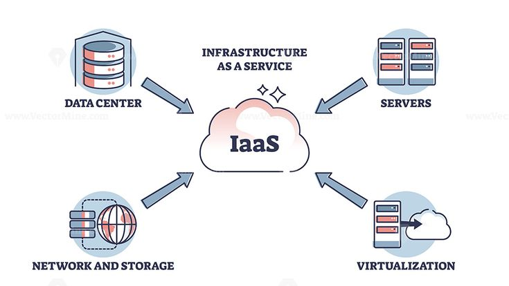

Étudiant en 5ᵉ année à l'École Supérieure d'Electronique de l'Ouest (ESEO), passionné par la conception, l'optimisation et la sécurisation des systèmes informatiques performants. Ambitieux et curieux, je vise à développer des solutions innovantes pour soutenir la transformation numérique des entreprises.
Expérience Professionnelle

Stage en développement de systèmes embarqués autonomes
Geophom - France (15/07/2024 à 29/11/2024)
Conception d'un système de prise de vue automatisée basé sur Raspberry Pi, destiné à capturer des images d'éoliennes et à évaluer leur visibilité. Programmation embarquée avancée avec optimisation des performances système et gestion complète des composants électroniques pour assurer une transmission fiable des données collectées.
Linux, Raspberry Pi, Shell, SQLite...
Projets

PFE: Observabilité et Infrastruture
ESEO, France (2025) en cours...
Le projet vise à concevoir un Centre d’Observabilité du Système d’Information utilisant Prometheus, Loki et Grafana pour centraliser, analyser et visualiser les données du SI en temps réel. L’objectif est d’anticiper les pannes, de prédire les dysfonctionnements et de réduire l’impact énergétique du système.
Gestion de projet, Docker, Grafana, Prometheus, Loki, Microsoft Azure, Gitea

Projet Examotheque
France (2025) en cours...
Le projet vise à créer une application web, Examothèque, hébergée sur Internet.
Examothèque est une plateforme collaborative centralisant une banque d’épreuves (examens, devoirs, etc.) au format PDF, provenant de différents établissements.
Elle permet à tout utilisateur: élèves, enseignants ou encadrants d’accéder facilement aux épreuves des années précédentes.
Ce projet démontre les techniques de création et d'obfuscation de payloads malveillants dans un environnement de laboratoire contrôlé.
L'objectif est de comprendre les mécanismes d'attaque par reverse shell et les méthodes de dissimulation de code malveillant pour
sensibiliser aux enjeux de cybersécurité.
Environnement :
*deux postes attaquants(Kali, génération du payload et récupération de PuTTY - Windows, empaquetage avec IExpress)
*une machine cible
Exploitation avec Metasploit, Programmation et Obfuscation (Python et C), Techniques d'Évasion, Gestion Mémoire Windows, Ingénierie Sociale et Camouflage, Analyse de Sécurité

Projet Backup and Restore de Gitea
France (2025)
Mise en place d'une stratégie complète de sauvegarde et de restauration pour Gitea afin d'assurer la continuité et la sécurité des dépôts Git, prévenant toute perte de données due à une panne, erreur humaine ou attaque. Ce projet inclut l'automatisation des sauvegardes régulières, la validation de l'intégrité des données, et la mise en œuvre de procédures de restauration rapide pour garantir une reprise d'activité optimale.
Microsoft Azure, Linux, Shell

Projet Cloud Computing
ESEO, France (2025)
Mise en place d'une infrastructure réseau sécurisée et hautement disponible avec Plan de Reprise d'Activité (PRA), déployée sur un modèle similaire à une solution IaaS complète. Le projet comprend la configuration d'équipements réseau avancés, l'implémentation de serveurs web redondants, la gestion intelligente du trafic, l'automatisation complète des déploiements et la surveillance proactive des systèmes pour garantir une disponibilité maximale.
Déploiement d'une infrastructure virtualisée complète pour héberger une application web et sa base de données, avec mise en place d'une redirection optimisée via un proxy inverse. Ce projet implique la configuration de trois machines virtuelles spécialisées : une pour l'application web, une dédiée à la base de données, et une dernière servant de proxy inverse pour la gestion intelligente du trafic et l'amélioration des performances globales du système.
Git, VirtualBox, Vagrant, Apache2, MariaDB
×
Stage en Développement Embarqué - Geophom
Période : 15/07/2024 à 29/11/2024
Conception d'un système de prise de vue automatisée basé sur Raspberry Pi, destiné à capturer des images d'éoliennes et à évaluer leur visibilité.
Programmation embarquée, traitement d'image et transmission des données.
Optimisation des performances système et gestion des composants électroniques.
Technologies utilisées : Linux, Raspberry Pi, Shell, DB Browser for SQLite, FileZilla Server
Mise en place d'une infrastructure virtualisée répartie sur trois machines virtuelles : l'une dédiée à l'hébergement de l'application web, une autre à la base de données, et la dernière configurée comme proxy inverse pour gérer la redirection des requêtes.
Assurance de l'interconnexion, sécurité et performance du système.
Configuration et optimisation des serveurs virtuels.